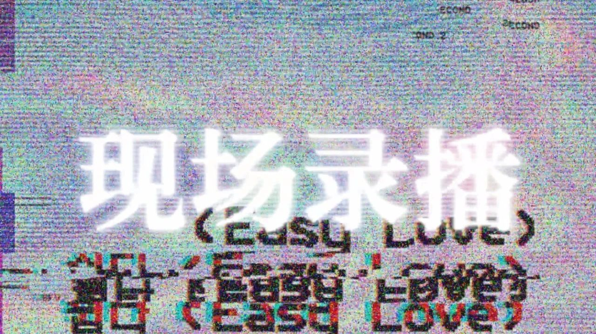

众筹 | 纪录剧场《现场录播》—换个“姿势”来认识性少数

跳出屏幕，离开键盘，
这次我们到livehouse
去听少数派们的声音
01
这场live 音乐不是主导
但我们有故事火锅爆米花
去年2月，向阳花开杭州LGBT公益小组的志愿者们用了3个月的时间在全国内采访了21位性少数群体。陈荃尔，纽约大学读教育剧场硕士，曾参与多部戏剧创作工作，通过她数月的创作，将21段真实材料重新整理设计，诞生了纪录剧场《现场录播》。
去年6月，话剧《阴道说》在杭州上演，几近爆场。今年6月，《阴道说》的导演之一牛油果又要带着新作《现场录播》与大家见面。
▲陈荃尔作品《玩偶工厂》
▲2017杭州XX剧社《阴道说》演出现场
（剧社发誓要占领杭州所有的livehouse做剧场：））
从“阴道说”
到“现场录播”
02
→
如果说，此前的《阴道说》主要是以女性身体来展开的，涉及到了部分性少数群体。
那么《现场录播》则将镜头直接对准了整个性少数群体。在对21位LGBT+采访者的采访过程中，他们各自叙述了在成长过程中与众不同的经历。
有甜蜜青涩的初恋时光、迷茫困惑的性认知时期、艰辛焦虑的现实压力等等......
“纪录剧场的力量来自于它的真实，演员将那些琐碎、冗长的语言行动碎片铸成一面面镜子，用演技还原一个个真实的人，从镜中观众可以看到故事里的他们，亦能反射出听故事的我们。”
什么是
“纪录剧场”？
这是来自杭州21位LGBT+的故事
03
“纪录剧场”（Ethnotheatre）是一种特殊的与社会学研究相结合的戏剧创作模式。创作者通过对一个特定群体进行观察与采访，结合文献史料，创作出包含真实采访片段的戏剧作品。简单来说，就是戏剧界的“纪录片”，有些场合也被人称作“纪实剧”、“采访剧”或“文献剧”。
纪录剧场的力量来自于它的真实，演员将那些琐碎、冗长的语言行动碎片铸成一面面镜子，用演技还原一个个真实的人，从镜中观众可以看到故事里的他们，亦能反射出听故事的我们。

▲纪录剧场《现场录播》海报
这次我们将镜头对准整个性少数群体，邀请大家来到一个节目录制的片场……
▲点击查看《现场录播》宣传片
在一切都看起来假的不行的布景里
录播导演正忙着录制一档
有关LGBT的节目
演员们不停换装演绎着不同的故事……

舞台这边TA在自言自语TA的故事
不远处的两个人正互诉曾经的悲欢
而场景的另一头，竟开始煮起了火锅
（恩 还有爆米花）
（来看剧的观众建议先填饱肚子，
否则.......会饿....）

一个声音不知道从哪里传来
“感觉不对…”
“你这种节目…恩…我们这里可能…
不合适…”……
本剧用“戏中戏”的方式叙述性少数者在成长过程中与众不同的经历。有甜蜜青涩的初恋时光、迷茫困惑的认知阶段、艰辛焦虑的现实压力等等......
国内有关性少数群体、多元性别戏剧并不多，由性少数群体排演的剧更是少之又少。XX剧社希望更多性少数群体能够在舞台上拥有话语权，发现并推出优质的少数群体戏剧作品。更希望以杭州为出发点，不断向周围辐射，让更多的人能借此接触多元性别、探讨多元性别话题，倡导多元性别意识，尊重理解多元性别。
04
演出众筹
演出时间 TIME
2018.6.2. 13:00
2018.6.3. 13:00
活动地址 VENUE
LOOPY 杭州市上城区中山南路77号
（利星名品广场3F）
预售价 ¥50
现场空降 ¥60
（现场票每场仅留50张）
【向阳花开XX剧社所筹资金
均用于演出成本及剧社运转】
扫描上方二维码或
点击文末阅读原文
了解项目更多详情
参与众筹
支持我们
【PS：这次还有好玩的艺术家
专属设计周边作为回馈~】
感谢筹小鸭平台为本次众筹提供服务
文案 | 胡杉杉
编辑 | 汤包
- THE END -